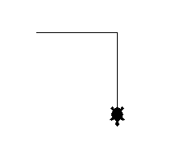
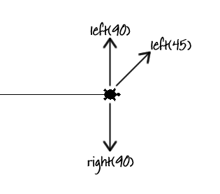
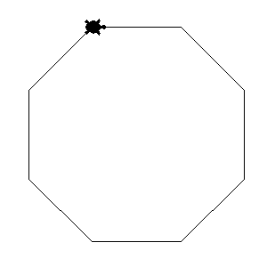
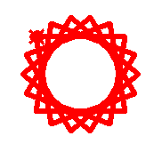

In this project, you’ll learn to use loops to easily repeat parts of your programs.
Step 1: Hello, turtle!
We’re going to have some fun programming turtles. A turtle is a tiny robot that draws on your screen, and can be controlled using Python commands.
Activity Checklist
Let’s make a turtle move around the screen, by running this short Python program:
from turtle import *
shape("turtle")
speed(5)
forward(100)
right(90)
forward(100)
done()
screenshot
The turtle has a pen attached, and draws a line as it moves around the screen. Here’s what the program does:
from turtle import * tells Python that you want to use the turtle library, a collection of code you can use to draw on the screen. The * means ‘import everything’.
shape("turtle") makes the drawing robot look like a turtle. As well as turtle, you can also use “arrow”, “circle”, “square”, “triangle” or “classic”.
speed(5) tells the turtle how fast to draw. You can use a number between 1 and 11. 11 is the fastest, 1 is the slowest.
forward(100) and backward(100) tells the turtle to move forward or backward 100 pixels.
left(45) and right(90) turn the turtle left or right by a number of degrees. Here are some examples:
screenshot
done() tells Python that we’ve finished programming the turtle.
What’s your favourite colour? To make your drawings more interesting, you can also change the colour and the size of the pen drawing the line. Here’s a simple example to try:
color("Purple") turns the turtle and the line purple. Notice the American spelling of the word colour, which doesn’t have a ‘u’ in it. You can also specify colours in hex, like you did in CSS. Instead of using pencolor("Red") you could use pencolor("#FF0000").
penup() lifts the pen from the screen, and pendown() lowers it again. This means that you can move the turtle without leaving a trail!
Save Your Project
Challenge: Drawing shapes
Can you use the turtle instructions above to draw:
A square?
A triangle?
Can you draw a house? What else can you draw?
Save Your Project
Step 2: Repeating yourself
When drawing a square and a triangle, your program repeated the same commands over and over again. Let’s get Python to repeat them for us!
Activity Checklist
Open up a new file, and run the following program:
from turtle import *
speed(11)
shape("turtle")
for count in range(4):
forward(100)
right(90)
done()
This program uses a for loop. You can use a for loop in Python whenever you want to repeat some code a set number of times.
In the program above, the commands forward(100) and right(90) are repeated 4 times, drawing a square. Turning 90 degrees for each corner means we turn 360 degrees in total.
Just like with an if statement, you should use the Tab key to indent the code that you want to repeat. Try changing the code, so that the line forward(100) is indented but the line right(50) isn’t, like this:
from turtle import *
speed(11)
shape("turtle")
for count in range(4):
forward(100)
right(90)
done()
What happens when you run this program? Did you get a straight line? In this program, Python will repeat forward(100) four times, and then turn right(90).
Now that you know how to repeat commands, you can create complicated shapes and patterns really easily. Run this program:
from turtle import *
speed(11)
shape("turtle")
for count in range(8):
forward(100)
right(45)
done()
screenshot
This program works in the same way as the square drawing program, except that it repeats 8 times, and only turns 45 degrees for each corner. This means that the code draws an 8-sided shape (an octagon), as the corners for each of the 8 sides add up to 360 degrees (360 divided by 8 is 45).
Here’s another example of what can be created using a for loop. What does this program draw?
from turtle import *
speed(11)
shape("turtle")
for count in range(30):
forward(5)
penup()
forward(5)
pendown()
done()
Save Your Project
Challenge: Loopy shapes
Can you use a for loop to draw:
A pentagon? (five sides)
A hexagon? (six sides) Remember that the angles of all the corners always add up to 360 degrees!
Can you draw a circle? You can move forward 1 pixel and turn 1 degree each time. How many times would you need to repeat these commands?
Save Your Project
Challenge: Drawing patterns
Can you use what you’ve learnt to draw awesome patterns? Here’s an example:
from turtle import *
speed(11)
shape("turtle")
pensize(6)
color("Red")
for count in range(36):
forward(100)
right(100)
done()
screenshot
Save Your Project
Challenge: Variables and loops
When drawing different shapes, you had to calculate how many degrees to turn for each corner yourself.
Can you use a calculation, so that the computer works this out for you? To work out the number of degrees to turn, you can divide 360 by the number of sides in the shape:
sides = 4
angle = 360 / sides
/ is the Python symbol for divide. Notice that the answer is stored in a variable called angle, which you can then use to draw your shape:
left(angle)
You can then change the number stored in the sides variable and test that it works for any shape!